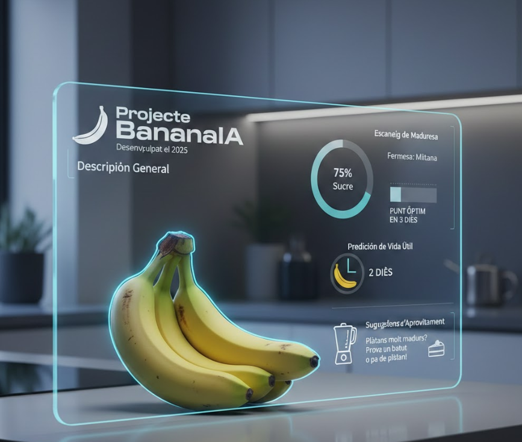

BananaIA Project
Developed in 2025

General Description
BananaIA is an innovative tool that uses computer vision to analyze the state of tropical fruits. The project focuses on predicting the exact moment of optimal ripeness to avoid food waste in both domestic settings and distribution chains.
Smart Features
- Ripeness Scanning: Through a photograph, the AI analyzes color patterns and skin spots to determine the sugar percentage and fruit firmness without the need for physical contact.
- Shelf Life Prediction: The algorithm calculates how many days are left until the fruit reaches its critical point, allowing the user to prioritize its consumption before it spoils.
- Usage Suggestions: If the AI detects that the fruit is overripe, it automatically generates usage recipes, such as smoothies or cakes, to promote zero waste.